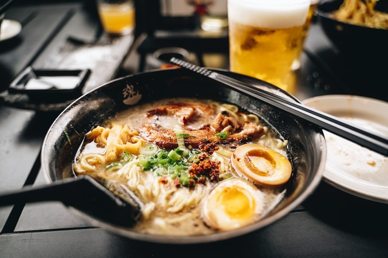

Tonkatsu Ramen Recipe

Tonkatsu ramen is an excellent introduction to Japanese noodle soups. Deeply flavored tonkatsu pork broth, ramen noodles and chashu pork belly come together to create comfort in a bowl.
Course Main
Cuisine Japanese
Prep Time 30 Minutes
Cook Time 12 Hours
Servings 4 Bowls
Calories 1262 Kcal
Ingredients
Tonkatsu Ramen
- 8 cups of tonkatsu broth
- 12 oz good quality dried ramen noodles
- 4 large or extra large eggs
- 2-3 oz enoki or other mushrooms
- thinly sliced green onions
Chashu Pork belly
- 2 lb pork belly
- 1/4 cup soy sauce
- 1/2 cup sake
- 1/2 cup mirin
- 1/4 cup sugar
- 2-3 cloves garlic
- 2 green onions coarsely chopped
Soy Bacon Tare
- 2 slices bacon
- 1/4 cup soy sauce
- 2 Tbsp mirin
- 2 Tbsp sake
- 4 Tbsp shiro miso
Miso Tare
- 1/2 cup shiro miso
- 1/4 cup sake
- 1/4 cup mirin
- 1-2 tsp kosher salt (depending on how salty you like your ramen)
Instructions
Chashu Pork Belly
- Combine the soy, sake, mirin, sugar, garlic and green onions in a ziploc bag large enough to hold the pork belly. Stick a straw in the bag and seal the ziploc bag up against it. Suck as much of the air out as you can and seal.
- Sous vide the pork for 10-11 hours at 170F.
- Remove the pork from the ziploc bag. Discard the bag and marinade.
- Let the chashu pork belly cool completely.
- Slice across the chashu pork (so you can get bacon like slices) - into 8-12 slices about 1/8 to 3/16 inches thick.
Soy Bacon Tare
- Combine all the ingredients in a small sauce pan. Simmer at the lowest setting for about an hour. Top up with a bit of chicken stock if needed.
- Remove the bacon.
Miso Tare
- Combine all ingredients in a small sauce pan and simmer at the lowest setting for about 5 minutes.
Medium Boiled Eggs
- Bring enough water to cover the eggs to boil. If you have a way to prick the eggshell, do it. Boil large eggs for 6 minutes & 30 seconds. If using extra large eggs, boil them for 7 minutes & 30 seconds. You may have to adjust your times slightly depending on the exact size of your eggs, but this should get you pretty close.
- Submerge the eggs in cold or ice water to chill. This stops the egg yolks from continuing to set up. Peel. Cut in half right before you serve your tonkotsu ramen.
Assemble The Tonkotsu Ramen
- Boil the ramen noodles in plenty of water as directed by packaging. If there's no translation on the packaging, usually it's 4 minutes. You don't need to salt water.
- Cook the mushrooms alongside the noodles - you just want them softened.
- Gently fry the chashu pork in a non-stick skillet until lightly browned.
- Place 1/4 of whichever tare you are using in the bottom of four bowls.
- Ladle in about 1/2 cup of the tonkotsu broth into each of the bowls and stir to mix.
- Add the noodles. Pour in another 1 1/2 cups of the tonkotsu broth per bowl.
- Top with the egg, mushrooms, pork and green onions.
Back to Main Recipe Page